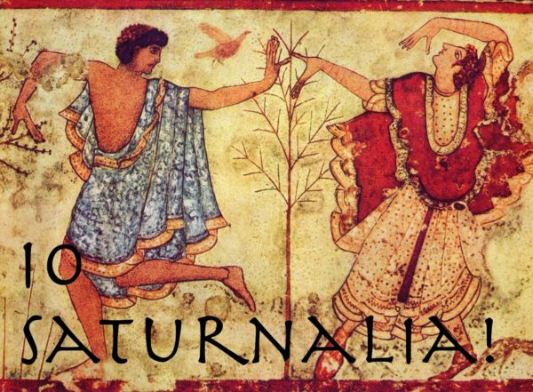

Aunque normalmente asociamos el origen de la Navidad a los mitos cristianos y al catolicismo, puesto que representa el nacimiento del niño Jesús; en realidad, esto es un error, al menos tal y como tenemos hoy en día aceptada la Navidad. Precisamente, por esta duda entre la Navidad pagana y la Navidad cristiana, hubo un caso en 1990 en el que la junta escolar de Solon (Ohio) decidió eliminar todas la representaciones de la Navidad en cualquier ámbito escolar, puesto que era una práctica en contra del Estado laico de la ciudad, es decir, no respetaba la sepación entre Iglesia y Estado. Igualmente, la junta perdió el caso porque las familias se oposieron a que sus hijos no pudiesen celebrar la Navidad en el colegio, defendiendo que la práctica de la Navidad era un acto secular y formaba parte de todas las culturas del mundo. A pesar de que la junta perdiera el caso, sí lograron eliminar las oraciones y la lectura de la biblia, asociadas a la celebración de la Navidad.
El origen de la Navidad no es para nada cristiano. Como lees en el principio de este artículo, el origen de la Navidad es pagano. La primera vez que podemos oír hablar de las Navidades celebradas el 25 de diciembre (tal y como lo conocemos hoy) surgió casi dos siglos después del nacimiento de cristo por lo que, incluso después del nacimiento del niño Jesús, las Navidades se seguían celebrando en torno a la figura de Saturno que los romanos implantaron.

Aunque en la edad moderna nos referimos a Santa Claus por San Nicolás, en una edad anterior, Santa era el nombre del dios Nimrod en Asia menor. Si lo pensamos un poco, veremos que el centro de las Navidades, en todas sus etapas, siempre han sido protagonizadas por los niños. Durante los tiempos romanos, los regalos se daban a niños y pobre; y los druidas sacrificaban a los niños para el dios que adoraban en estas fechas. De esta misma manera, Nimrod o el Santa pasado, deboraba a los niños y, hoy en día les reparte regalos. Igualmente, también debemos analizar la figura de San Nicolás, que proviene de un personaje llamado “el alegre Nick” o “el viejo Nick”. Si nos centramos en su nombre, Nick proveine de Nikos que significa “constructor y destructor”, mientras que “Laos” significa pueblo. Los nicolaítas (seguidores de San Nicolás) se definen entonces como “el pueblo que sigue al destructor”, que no deja de ser, de nuevo, Nimrod.
La explicación más consistente de los historiadores es que el origen de la Navidad estuvo relacionado con una serie de decisiones tomadas por los altos mandos de la iglesia cristiana en los siglos III y IV. Entre ellas, se considera como la más determinante, la moción del Papa Julio I en 350 para establecer la navidad el 25 de diciembre. Esto fue decretado 4 años después por el Papa Liberio.